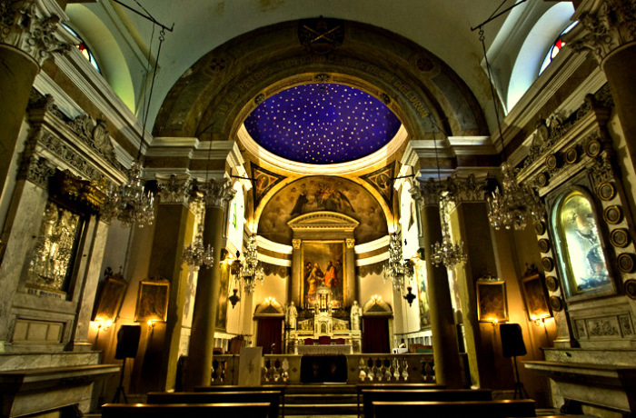

Beşikli Mağara

Roma dönemine ait kaya mezarlarıyla ünlüdür.
St. Pierre Kilisesi

Hristiyanlık tarihinin önemli merkezlerinden biri olan St. Pierre Kilisesi, kayalara oyulmuş yapısıyla, dini bir hac yeri olarak büyük öneme sahiptir.